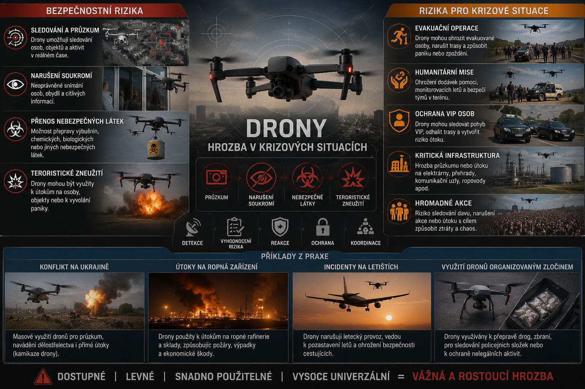

Bezpečnostní rizika
- Sledování a průzkum citlivých míst
- Narušení soukromí a sběr dat
- Přenos nebezpečných látek
- Teroristické zneužití
Bezpečnostní přehled
Interaktivní rozcestník k hlavním rizikům, dopadům a zásadám připravenosti.

Mapa hrozeb
Rizika se liší podle prostředí, ale rychlá detekce, vyhodnocení a koordinovaná reakce jsou společným základem.
Doporučená reakce
Příklady z praxe
Konflikt: bezpilotní prostředky rozšiřují dosah i rychlost průzkumu.
Infrastruktura: cílem mohou být energetické a průmyslové objekty.
Letiště: narušení vzdušného prostoru může zastavit provoz.
Zločin: malé drony mohou usnadnit skrytou logistiku i sledování.